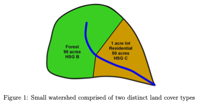
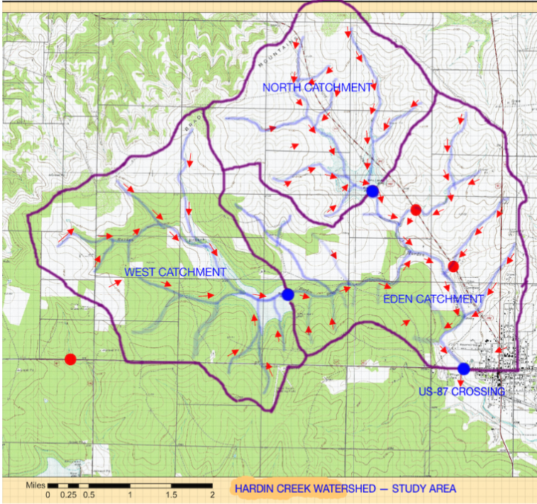

Exam 2 ¶
LAST NAME, FIRST NAME
R00000000
Purpose :¶
Demonstrate ability to apply hydrologic and problem solving principles with respect to hydrologic abstractions, specific loss models, and hydrograph timing parameters.
Problem 1 Time of Concentration¶
Figure 1 is a watershed.

The forest portion has a flow path length of 360 feet, at an average slope of 0.01 (1%) until it reaches the residential portion whose path length is 430 feet, at an average slope of 0.005 (0.5%).
Estimate the time of concentration using the NRCS-Upland method.
# solution here
Problem 2 Time of Concentration for Hardin Creek Watershed(s)¶
Figure 2 below is the Hardin Creek study area, already delineated with three sub-basins identified.

Estimate the time of concentration using the NRCS-Upland method for the Harden Creek watersheds (each sub-basin to reservoir riser pipe, and the portion downstream of the reservoirs directly to the study point of interest).
Summarize your results in the table below:
Sub-Basin |
Area (sq. mi.) |
Time of Concentration (minutes) |
|---|---|---|
North Basin |
??? |
??? |
West Basin |
??? |
??? |
Eden Basin |
??? |
??? |
# solution here
Problem 3. Loss Models¶
A tabulation of an observed storm and associated runoff for the drainage area are listed below. The runoff was measured at the culvert system and indicated by the blue circle on the map.

Time (hrs) |
Accumulated Rain (inches) |
Observed Discharge (cfs) |
Incremental Volume (ft\(^3\)) |
Cumulative Volume (ft\(^3\)) |
|---|---|---|---|---|
0 |
0.000 |
0.00 |
||
1 |
0.000 |
0.00 |
||
2 |
0.000 |
0.00 |
||
3 |
0.000 |
0.00 |
||
4 |
0.000 |
0.00 |
||
5 |
0.000 |
0.00 |
||
6 |
0.000 |
0.00 |
||
7 |
0.000 |
0.00 |
||
8 |
0.101 |
1.40 |
||
9 |
0.106 |
0.31 |
||
10 |
0.111 |
0.31 |
||
11 |
0.115 |
0.31 |
||
12 |
0.120 |
0.31 |
||
13 |
0.120 |
0.40 |
||
14 |
0.150 |
0.40 |
||
15 |
0.750 |
24.66 |
||
16 |
2.750 |
588.23 |
||
17 |
2.940 |
808.70 |
||
18 |
3.030 |
154.28 |
||
19 |
3.030 |
94.68 |
||
20 |
3.030 |
27.56 |
||
21 |
3.090 |
36.13 |
||
22 |
3.210 |
19.65 |
||
23 |
3.300 |
7.00 |
||
24 |
3.300 |
0.00 |
Determine
The loss from the raw precipitation input to the watershed.
An appropriate CN for the watershed supported by the tabulated data.
The maximum retention S for the watershed supported by the tabulated data.
# solution here
Problem 4. Evapotranspiration Models¶
Estimate the monthly evapotranspiration depths for the Corpus Christi (Nueces County) area using the Thornwaithe method.
Repeat the process using the Blaney-Criddle method for the same geographic area.
Compare the results to the values reported at https://waterdatafortexas.org/lake-evaporation-rainfall. Corpus Christi is in Cell 911 and Cell 1010 in the map shown at this website, choose either cell for your comparison.
# solution here